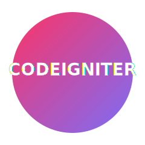

Skill
CodeIgniter 3 / 4
CodeIgniter (CI) is a powerful PHP framework with a small footprint. CI3 is known for simplicity and speed, while CI4 introduces modern PHP features, namespaces, improved routing, and enhanced security.

Example (CI4 Routing)
// app/Config/Routes.php
$routes->get('/', 'Home::index');
$routes->get('users', 'UserController::index');
$routes->post('users/save', 'UserController::save');
🧩 Key Features in CI3
- Lightweight and fast performance.
- MVC architecture with clear separation of concerns.
- Simple routing and configuration system.
- Built-in helpers and libraries.
- Easy integration with MySQL and form validation.
⚙️ CI4 Enhancements
- Fully compatible with PHP 8+ using modern syntax.
- Support for namespaces and autoloading (Composer-based).
- Better security with CSRF, CSP, and improved session handling.
- CLI support for migrations, seeds, and tasks.
- More powerful routing and service container (Dependency Injection).
🚀 CI3 → CI4 Migration Steps
- Set up a fresh CodeIgniter 4 project using Composer.
- Move CI3 controllers, models, and views into the new structure.
- Update namespaces for all PHP files.
- Refactor database queries using CI4’s Query Builder or Model class.
- Replace `$this->load->view()` with `return view()` syntax.
- Configure environment using `.env` and `/app/Config/` files.
💡 Best Practices
- Use environment-based configuration for production/staging.
- Keep controllers lean; use services and models for logic.
- Enable error logging and caching for performance.
- Use migration and seeders for consistent database setup.
- Secure uploads, CSRF, and user input validation.